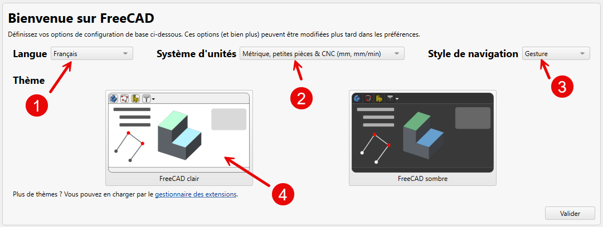

Wat is FreeCAD & hoe installeer je het? Qu'est-ce que FreeCAD & comment l'installer ? What is FreeCAD & how do you install it?
Voor we ook maar één lijn tekenen: wat is dit programma eigenlijk, waarom is "parametrisch" het toverwoord, en hoe krijg je de juiste versie op je computer? In dit hoofdstuk zetten we het fundament. Avant de tracer la moindre ligne : qu'est-ce que ce logiciel, pourquoi « paramétrique » est-il le mot clé, et comment installer la bonne version ? Ce chapitre pose les fondations. Before we draw a single line: what is this program, why is "parametric" the magic word, and how do you get the right version installed? This chapter lays the foundation.
- uitleggen wat FreeCAD is en wat "parametrisch" betekentexpliquer ce qu'est FreeCAD et ce que « paramétrique » signifieexplain what FreeCAD is and what "parametric" means
- de juiste versie (1.1.1) downloaden voor jouw besturingssysteemtélécharger la bonne version (1.1.1) pour votre systèmedownload the correct version (1.1.1) for your operating system
- FreeCAD installeren en voor de eerste keer openeninstaller FreeCAD et l'ouvrir pour la première foisinstall FreeCAD and open it for the first time
- benoemen waarom we 1.1.1 als vast ijkpunt nemenexpliquer pourquoi 1.1.1 est notre référence fixestate why we use 1.1.1 as our fixed reference
01 Wat is FreeCAD? Qu'est-ce que FreeCAD ? What is FreeCAD?
FreeCAD is een gratis, opensource programma waarmee je in drie dimensies tekent. Het is gemaakt voor echte engineering: je bouwt geen losse vlakjes, maar volwaardige vaste vormen (solids) die je later kunt printen. Voor ons als radioamateurs is dat precies wat we nodig hebben — we willen behuizingen, frontpanelen en houders ontwerpen die we daarna op een 3D-printer omzetten in een echt onderdeel.
Het sleutelwoord is parametrisch. Dat betekent: je tekent niet zomaar een doos, je tekent een doos met maten en regels. "Deze wand is 2 mm dik", "dit gat zit 5 mm van de rand", "deze twee zijden zijn even lang". Die maten en regels blijven bewaard. Wil je later de doos 10 mm langer maken? Dan wijzig je één getal, en het hele model past zich aan. Je hoeft niets opnieuw te tekenen.

Het einddoel van Niveau 1 is concreet: een eenvoudig bakje rond een printplaat tekenen en als printbaar bestand exporteren. Alles wat we nu leren, werkt naar dat eerste, echt bruikbare onderdeel toe. L'objectif du Niveau 1 est concret : dessiner un petit boîtier autour d'un circuit imprimé et l'exporter comme fichier imprimable. The goal of Level 1 is concrete: design a simple box around a PCB and export it as a printable file.
02 Waarom de juiste versie? Doelversie 1.1.1 Pourquoi la bonne version ? Version cible 1.1.1 Why the right version? Target version 1.1.1
FreeCAD verandert tussen versies: knoppen, menu's en zelfs hele werkbanken zien er anders uit. Tussen versie 1.0 en 1.1 is er flink wat gewijzigd. Daarom kiest deze cursus één vast ijkpunt: FreeCAD 1.1.1 of nieuwer. Alle stappenplannen, knopnamen en screenshots gaan over díe versie. Installeer je een oudere versie (1.0 of lager), dan kloppen sommige stappen niet meer met wat je op je scherm ziet.
Veel oudere tutorials en filmpjes online tonen FreeCAD 0.x of 1.0. Die zijn nuttig om concepten te begrijpen, maar de exacte handelingen kunnen afwijken. Volg in deze cursus altijd de stappen voor 1.1.1. Beaucoup de tutoriels en ligne montrent FreeCAD 0.x ou 1.0. Utiles pour les concepts, mais les manipulations exactes peuvent différer. Suivez toujours les étapes pour 1.1.1. Many older tutorials show FreeCAD 0.x or 1.0. Useful for concepts, but exact steps may differ. Always follow the 1.1.1 steps here.
03 Downloaden & installeren — stappenplan Télécharger & installer — procédure Download & install — step by step
- WEB Ga naar freecad.org/downloads. Waarom: de officiële site geeft je de echte, veilige installer — geen omwegen via andere downloadsites.
- WEB Kies de stabiele versie 1.1.1 (of nieuwer) voor jouw besturingssysteem: Windows, macOS of Linux. Waarom: vermijd de "weekly builds" / ontwikkelversies — die zijn voor testers en kunnen instabiel zijn. Wij willen de stabiele 1.1.1.
- PC Download het installatiebestand en open het. Waarom: het bestandstype verschilt per systeem (Windows: installer; macOS: schijfbestand; Linux: AppImage of pakket).
- PC Doorloop de installatie en aanvaard de standaardopties; start FreeCAD daarna. Waarom: de standaardinstellingen zijn prima om te starten — fijnafstelling (taal, eenheden, navigatie) doen we in hoofdstuk 2.
04 De eerste keer openen Première ouverture Opening it the first time
Bij de eerste start kom je op een startpagina terecht. Verken gerust even, maar wijzig nog niets: de belangrijke eerste instellingen (taal, eenhedenstelsel, navigatiestijl en thema) behandelen we rustig in het volgende hoofdstuk. Voor nu volstaat het dat het programma opent en werkt.

Installeer FreeCAD 1.1.1 en open het programma. Zoek daarna het versienummer op via het Help-menu → "Over FreeCAD" en controleer dat er 1.1.1 (of nieuwer) staat. Noteer je besturingssysteem erbij — dat is handig wanneer een sneltoets of menu later per systeem verschilt. Installez FreeCAD 1.1.1 et ouvrez-le. Vérifiez le numéro de version via le menu Aide → « À propos de FreeCAD » et notez aussi votre système d'exploitation. Install FreeCAD 1.1.1 and open it. Check the version via the Help menu → "About FreeCAD" and note your operating system as well.
05 Veelgemaakte fouten Erreurs fréquentes Common mistakes
- Een oude versie installeren (1.0 of lager). Dan wijken knoppen en menu's af van deze cursus. Controleer altijd op 1.1.1 via Help → Over FreeCAD.
- Een "weekly build" / ontwikkelversie pakken. Die is voor testers en kan instabiel zijn. Kies de stabiele 1.1.1.
- Het verkeerde systeempakket downloaden. Let op of je Windows, macOS of Linux nodig hebt (en bij Windows: 64-bit).
06Samenvatting
FreeCAD is gratis, opensource en parametrisch: je tekent met maten en regels die je achteraf kunt wijzigen. Voor deze cursus gebruik je versie 1.1.1 of nieuwer, gedownload van de officiële site. Na installatie open je het programma; de eerste instellingen volgen in hoofdstuk 2. Het einddoel van Niveau 1 is een printbaar bakje rond een printplaat. FreeCAD est gratuit, open source et paramétrique. Pour ce cours, utilisez la version 1.1.1 ou plus récente. Après l'installation, ouvrez le programme ; les réglages suivent au chapitre 2. FreeCAD is free, open source and parametric. For this course use version 1.1.1 or newer. After installing, open it; first settings follow in chapter 2.
- Parametrisch = tekenen met maten/regels die je later kunt wijzigen.Paramétrique = dessiner avec des cotes/règles modifiables.Parametric = drawing with dimensions/rules you can change later.
- Doelversie van deze cursus: FreeCAD 1.1.1 of nieuwer.Version cible : FreeCAD 1.1.1 ou plus récente.Target version: FreeCAD 1.1.1 or newer.
Fig. 1.1 en 1.2 zijn beelden van Dominique Lachiver (FreeCAD 1.1, Franse interface, CC BY-SA 4.0). Ze kunnen later vervangen worden door eigen Nederlandstalige 1.1.1-captures (light + Gesture). Het exacte menulabel "Over FreeCAD / About FreeCAD" wordt nog tegen de NL-1.1.1-interface bevestigd. Les fig. 1.1 et 1.2 proviennent de Dominique Lachiver (FreeCAD 1.1, FR, CC BY-SA 4.0) ; elles pourront être remplacées par nos propres captures 1.1.1. Le libellé exact du menu « À propos » reste à confirmer. Fig. 1.1 and 1.2 are by Dominique Lachiver (FreeCAD 1.1, FR, CC BY-SA 4.0); they may later be replaced by our own 1.1.1 captures. The exact "About FreeCAD" menu label is to be confirmed.